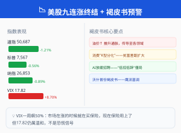
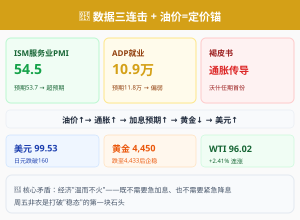

隔夜，标志性事件密集落地。 美股九连涨在周三终结——道指跌1.21%，标普跌0.56%，纳指跌0.89%。ISM非制造业PMI录得54.5（超预期53.7），服务业加速扩张。美联储发布沃什任期内首份褐皮书——承认中东冲突推升通胀，消费出现"K型分化"。美元指数升至99.53，日元跌破160关口。黄金跌至4,433美元后今早反弹至4,450。WTI原油收涨2.41%至96.02美元——中东的地缘溢价还在加码。下面拆开来看。
| 市场 | 最新收盘 | 日涨跌幅 | 近一周 |
|---|
| 道琼斯工业指数 | 50,687.07 | -1.21% | +1.43% |
| 标普500 | 7,567.43 | -0.56% | +1.72% |
| 纳斯达克 | 26,853.98 | -0.89% | +1.19% |
| 上证指数 | 4,083.97 | +0.22% | +0.65% |
| 创业板指 | 4,122.99 | +1.65% | +4.34% |
| 恒生指数 | 25,633.21 | -1.56% | -0.31% |
| WTI原油 | $96.02 | +2.41% | +10.55% |
| 现货黄金 | $4,450 | -0.59% | -1.42% |
| 美元指数 | 99.53 | +0.31% | +1.04% |
| VIX恐慌指数 | 17.82 | +8.70% | +11.30% |
美东时间周三，美股三大指数全线下挫，结束了标普和纳指连续9个交易日的上涨纪录。 道指跌1.21%报50,687.07，标普500跌0.56%报7,567.43，纳指跌0.89%报26,853.98。科技股普遍回调——微软跌超4%、谷歌跌近4%、亚马逊跌近2%。这是自5月22日以来美股首次出现单日回调，也结束了1995年以来最长的一波连涨行情。（来源：MarketScreener、东方财富）
但真正改变叙事的是凌晨02:00发布的美联储褐皮书。 这是新任主席凯文·沃什（Kevin Warsh）任期内的第一份褐皮书，数据截至5月27日。报告核心信息有三点：第一，经济"温和扩张但分化加剧"——12个辖区中10个报告增长，1个下滑，1个无变化。第二，中东冲突导致的能源价格上涨已传导至航运、包装、食品杂货、化肥等多个领域，成为通胀的主要推手——4月PCE已升至3.8%（2023年以来最大涨幅），企业利润率承压。第三，消费出现明显的"K型分化"——高收入家庭消费韧性不减，中等收入家庭"从每一美元中榨取更多价值"，低收入消费者面临更大的财务压力。（来源：新浪财经、证券时报、华尔街见闻）
就业方面褐皮书也给出了重要信号： 11个辖区就业"几乎无变化"，呈现"低招聘、低解雇"的僵局。制造业（受国防和数据中心需求支撑）是招聘亮点，但AI应用正在放缓企业的新人招聘需求。这与昨晚JOLTS偏高、ADP偏弱的数据组合形成呼应——不是企业不想招，而是技术变革在重塑用工结构。（来源：财联社）
📌 投资视角： 九连涨终结本身不算坏消息——9天涨了3.1%后的一次正常回调。但褐皮书透露的结构性信号值得警惕：油价→通胀→消费分化的传导链正在加速运行。周五非农若再超预期，"通胀螺旋"叙事将不可忽视。

标普500九连涨终结 + 沃什首份褐皮书暗示油价推升通胀——一场"数据双击"
1A股创业板盘中突破4200点创新高，但超3400只个股下跌
昨日回顾： 三大指数冲高回落，创业板从+4%收窄至+1.65%，CPO"易中天"成交超千亿。（上期晚报已详细复盘）
今早开盘（6月4日）： 上证指数小幅高开0.04%报4,084.86点，深证成指涨0.14%，创业板指涨0.33%。但开盘后创业板迅速拉升，盘中一度涨近4%、突破4200点大关——创创业板历史首次站上4200点。中韩自贸区、超导概念、宠物经济板块领涨。（来源：东方财富、新浪财经）
但分化的剧本与昨天如出一辙： 截至上午收盘，上证收于4,097.94点（+0.56%），深证成指涨2.31%，创业板涨3.97%。但上涨家数仅约1,998只，下跌家数3,440只——又是"指数涨、个股跌"的结构性行情。CPO概念在连续两日创纪录交易后出现分化，部分资金开始向中韩自贸、超导等新题材扩散。OLED概念、宠物经济等补涨板块走强。
一句话总结当前A股： 科技主线的情绪没有断，但每天3,000+只个股下跌的格局说明资金高度集中在头部品种。这种行情的持续性取决于两件事——一是CPO/光通信龙头的业绩能否在二季报中兑现，二是外部宏观环境（周五非农）能否为全球风险偏好提供支撑。
2美股九连涨终结，科技股全线回调——但VIX到17.82才是一个真正的信号
隔夜美股三大指数全线下挫。 道指跌1.21%报50,687.07，标普500跌0.56%报7,567.43，纳指跌0.89%报26,853.98。结束了标普和纳指连续9个交易日的上涨纪录（追平1995年以来最长连涨）。（来源：MarketScreener、东方财富）
下跌结构分析： 大型科技股普跌——微软跌超4%（连续第二天回调）、谷歌跌近4%、亚马逊跌近2%。但Marvell只跌了约1.5%——两日累涨超50%后的温和回调，说明AI核心标的的资金支撑仍然很强。中概股逆势走强：纳斯达克中国金龙指数涨1.83%，阿里巴巴涨超4%。（来源：中新经纬、东方财富）
VIX指数收于17.82，单日上涨8.70%。 这是本周连续第三天VIX在指数回调的同时显著上升。从上周五的12左右到现在的17.82，VIX在一周内飙升了近50%。这组数据的含义很明确：过去一周市场在"边涨边买保险"——现在保险开始用上了。但17.82仍处于历史中位偏低水平，还没有触发恐慌信号。（来源：新浪财经）
📌 投资视角： 九连涨终结不值得恐慌——9天涨了3.1%后的正常调整。真正需要看的是回调结构：科技股领跌但AI核心品种（Marvell、英伟达）跌幅有限。如果周五非农数据温和，科技股可能迅速反弹；如果非农大超预期触发加息预期，这轮回调才有深度。
3科技/AI微软谷歌回调，但AI基础设施的逻辑没有被破坏
隔夜科技股的回调主要集中在大型互联网平台，而非AI基础设施。 微软跌超4%、谷歌跌近4%的主要原因并非基本面变化——有分析指出微软的下跌与期权到期和程序化交易有关，Alphabet的下跌则与800亿美元融资的稀释效应持续发酵有关。相比之下，Marvell仅跌约1.5%，英伟达跌幅不足1%。（来源：东方财富）
AI基础设施的订单和产能信号依然强劲。 英伟达GTC大会后，Spectrum-X硅光技术量产的产业逻辑在持续发酵。国盛证券最新研报上调光模块板块评级，认为2027年全年需求节奏与业绩轮廓逐步清晰。这不是"概念炒作"——头部光模块企业的排产已经排到了2027年上半年。（来源：国盛证券）
褐皮书也侧面验证了AI产业的拉动效应： 制造业招聘亮点来自"国防和数据中心需求支撑"。数据中心建设就是AI军备竞赛的直接载体。Alphabet GCP营收同比增63%、积压订单4,600亿美元——这些数字说明不是泡沫，是真金白银的投入。
4前沿/国际日元跌破160创34年新低，中东地缘持续升温
隔夜全球外汇市场有一个标志性事件：日元跌破160关口。 美元/日元报160.03，为1990年以来首次跌破160。日本财务大臣片山皋月重申"随时准备干预"，但市场对此已产生"抗药性"——过去半年日本央行多次口头干预但效果持续缩短。日元贬值的核心驱动是美日利差——美国10年期国债收益率约4.45%，而日本10年期国债收益率仅约1.5%。（来源：新华财经、证券之星）
中东局势同样没有降温。 美伊谈判仍处于"各说各话"状态。WTI原油结算价涨2.41%至96.02美元，为5月22日以来最高。API库存连续七周下降——截至5月29日当周骤减680万桶（预期360万桶）。与此同时，美国战略石油储备降至3.57亿桶，为2024年1月以来最低。欧洲央行最新报告确认黄金已替代美元成为全球官方储备第一大资产——这是美元信用体系松动的另一个结构性信号。（来源：财联社、21世纪经济报道、中新经纬）
黎巴嫩局势方面， 以色列继续在黎南部定点突袭，伊朗将"以色列停止对黎军事行动"作为谈判红线。特朗普与内塔尼亚胡就中东政策的分歧继续扩大。霍尔木兹海峡封锁状态持续——全球每日约1,200-1,300万桶的供应缺口没有任何缓解迹象。
5宏观ISM 54.5超预期 + ADP 10.9万偏弱 + 褐皮书——数据三连击
隔夜宏观层面有三份重要数据/报告，指向同一个方向：美国经济"温而不火"。
第一份：ISM非制造业PMI录得54.5，高于预期的53.7和前值53.6。 服务业占美国经济约80%，54.5代表温和扩张。分项来看，商业活动和新订单指数均处于扩张区间，但就业分项偏弱——与ADP数据相互印证。ISM服务业就业分项走弱 + ADP略低于预期 = 周五非农可能偏保守。市场对6月加息的定价随着这份数据有所回落。（来源：Investing.com、财联社）
第二份：ADP数据（前日20:15公布）10.9万，略低于预期的11.8万。 ADP偏弱的核心意义不是数据本身，而是它给JOLTS的"过热信号"降了温——JOLTS高是因为企业想招人但招不到，不意味着就业市场全面过热。
第三份：美联储褐皮书（凌晨02:00发布）。 如上文所述，褐皮书确认了三条焦虑线：油价推升通胀、消费K型分化、AI放缓招聘。这三条线共同指向一个结论——美联储的"数据依赖"模式不会改变，但数据的解读变得更复杂了。不是简单的"就业强→加息"，而是"就业结构性矛盾→需要更多时间去判断"。
美元指数收于99.53，日内涨0.31%， 受ISM超预期支撑走强。日元跌破160后，日本央行是否会在非农前提前干预——这是今晚最大的尾部风险。
📌 投资视角： ISM服务业PMI 54.5 + ADP 10.9万 + 褐皮书 = 美联储"不用急"的组合。既没有经济过热的紧迫加息需求，也没有衰退需要紧急降息的压力。周五非农将是打破这种"稳态"的第一块石头。在非农之前，美元偏强、黄金承压、美债收益率窄幅震荡——这是最典型的"等数据"格局。

ISM 54.5 + ADP 10.9万 + 褐皮书预警——三份数据指向同一个结论：美联储不着急
6商品/黄金黄金跌至4,433后反弹，WTI再破96——油价才是当前一切资产定价的"锚"
隔夜黄金继续承压。 现货黄金纽约尾盘收跌1.23%报4,433.51美元，为本周新低。今早亚洲盘企稳反弹至4,450美元附近，日内涨约0.34%。COMEX黄金期货报约4,462.7美元。（来源：财联社、东方财富）
黄金下跌的逻辑链条依然清晰： ISM服务业PMI超预期 → 美元走强（99.53） → 美债收益率上行 → 实际利率走高 → 黄金承压。褐皮书虽然提示了通胀压力——通胀上升按理利好黄金——但市场更关注的是"通胀可能导致加息"，而加息才是黄金的克星。（来源：中金在线）
反直觉判断再次被验证： 黄金现在定价的锚是实际利率，不是地缘风险。即使中东在打仗、美伊在"罗生门"、霍尔木兹海峡封锁持续，黄金在过去一周从4,563跌到了4,433。原因很简单——ISM数据超预期强化了"不降息"的预期，实际利率上行压过了一切避险情绪。这个逻辑在周五非农后可能进一步强化——如果非农超预期，金价测试4,400的概率非常高。
原油方面，WTI结算价涨2.41%至96.02美元。 今早亚洲盘小幅回落至95.20美元。原油的核心变量仍是中东——美伊谈判僵局+霍尔木兹封锁+库存连降七周。褐皮书提到的"油价推升通胀"正在成为事实。这条传导链——油价↑ → 通胀↑ → 加息预期↑ → 黄金↓ → 美元↑——是当前全球资产定价的核心主轴。（来源：财联社、东方财富）
🧠 本周主轴：数据链正在加速，褐皮书确认了"K型分化"——周五非农决定一切
情景一 · 非农超预期（>15万）→ 加息预期升温 → 风险资产承压
JOLTS已炸裂 → 非农再超预期 → 市场加速定价6月加息（概率升至50%+） → 10年美债收益率突破4.5% → 美元指数破100 → 黄金测试4,400 → 科技股短线回调加深，但AI核心标的有业绩支撑跌幅有限
情景二 · 非农不及预期（<10万）→ 加息叙事退潮 → 风险资产全面反弹
ADP偏弱 + ISM就业分项走弱 → 非农确认放缓（<10万） → 6月加息概率降至20%以下 → 美元回调至99下方 → 黄金反弹挑战4,600 → 科技股延续涨势 → 全球risk-on重启
🔴 核心矛盾
油价还在涨（96美元）、ISM还在扩张（54.5）、JOLTS还在高位——这些数据都应该让美联储更鹰。但ADP偏弱、褐皮书确认消费分化、AI在替代就业——这些又让美联储不能太鹰。鱼和熊掌，周五非农来解决。
九连涨终于断了，VIX一周飙了50%，
褐皮书承认了油价涨价在传导。
周五非农面前，所有资产都在"等"。
📡
扬说财经 · 早报
用漫画看懂财经 · 每日早8点更新 · 约3分钟音频
⚠️ 风险提示：本文仅为信息分享与知识科普，不构成任何投资建议。市场有风险，投资需谨慎。数据来源于公开信息，如有出入请以官方数据为准。